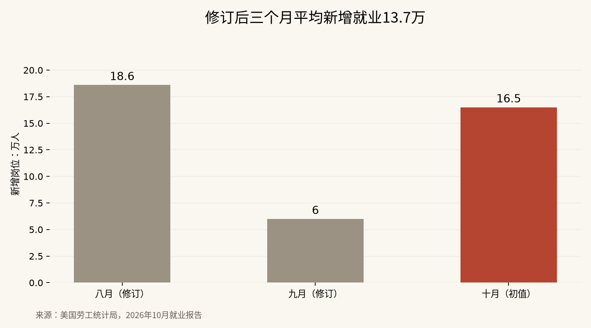

非农新增16.5万：就业强了，科技股为什么未必轻松
两个月就业合计上修8.4万，三个月平均新增13.7万；好消息同时抬高了市场对资金成本的担忧。
这份就业报告要拆开三笔账：十月到底增加了多少岗位，前两个月被改成了什么样，以及这些变化如何影响利率。美国劳工统计局11月6日公布十月非农新增16.5万人、失业率4.1%。它削弱了就业迅速转坏的叙事，却没有替科技股解除估值压力。
就业强，对公司销售和家庭收入是支撑；就业强，也意味着央行没有那么迫切地放松政策。企业盈利和资金成本可以往相反方向变化。这正是周五市场难以简单地把“超预期”翻译成“全部上涨”的原因。
修订之后的三个月就业对照
| 月份 | 此前公布新增 | 本次报告中的新增 |
|---|---|---|
| 八月 | 13.3万人 | 18.6万人 |
| 九月 | 2.9万人 | 6.0万人 |
| 十月 | 本次首次公布 | 16.5万人 |

八月上修5.3万人，九月上修3.1万人，合计8.4万人。修订后的三个月平均值，是18.6、6.0和16.5相加再除以三，得到13.7万人。劳工统计局同时列出此前十二个月平均每月新增4.8万人，说明最近三个月确实比更长一段时期强。
我重新加了一遍，是为了避开一个很顺手的误读：16.5万加上8.4万，不能叫作“十月新增24.9万”。后面那8.4万属于过去两个月。它们会改变就业走势的判断，却不属于十月一个月的增量。
预期也有口径差异。路透调查的经济学家预期为6.5万人，部分市场帖子引用7万人，还有报道引用5.9万人。以6.5万计算，实际比预期多10万人。无需把不同调查混成一个唯一共识，这份报告偏强的方向并不靠那一点差别成立。
专业和商业服务贡献了最多新增岗位
专业和商业服务新增7万人，医疗保健新增4.2万人，运输仓储新增2.5万人，制造业新增1.9万人。这些是报告列出的实际行业增量，不是根据股价倒推的故事。
其中专业和商业服务最值得讨论。市场此前担心AI迅速挤压白领岗位，这个大类的增加至少说明，十月总量数据尚未呈现一种全面坍塌的景象。但该行业包含多种业务与岗位，不能把整个行业新增都算作某一种白领工作，更不能据此证明AI对任何岗位都没有影响。
制造业新增也不能被单独拿来解释所有政策效果。就业统计告诉我们结果，识别结果由哪一项政策、哪一笔投资或哪一个季节性因素造成，需要更多资料。宏观报告没有提供那种精确到单一原因的答案。
我更愿意保留两个判断：招聘改善的行业不止一个；改善的速度还需要后续月份确认。这比从一个月的数据跳到“经济彻底过热”或“AI替代已经结束”更接近报告本身。
失业率稳定，不代表每个人的工作质量都改善
失业率来自住户调查，非农新增来自机构调查。两套调查观察的是不同对象，不能把人数直接拼接。十月劳动参与率为61.9%，就业人口比为59.3%，报告称变化不大。
另一个不那么醒目的数字，是出于经济原因而非自愿从事兼职的人数增加33.9万，达到480万。这些人希望全职工作，却因为工时被削减或找不到全职岗位而只能兼职。总岗位增长和一部分人的工时不足，可以同时出现。
这也是为什么“失业率只有4.1%”不足以描述所有家庭的处境。失业率只数符合定义的失业者，不会把每一种收入压力都显示出来。岗位数量、工作时长和工资增速要放在一起理解。
十月私营部门平均时薪环比上涨0.4%，至38美元；同比上涨3.1%。平均每周工时维持34.4小时。环比与同比对应不同时间跨度，不能把0.4%简单乘十二，宣称工资已经按某个新年率稳定增长。
市场得到的是更少的降息理由
路透当天报道，交易者对十二月加息的押注由较早时的70%升至78%。这是一段市场定价的变化，不是美联储已经作出的决定。不同报价时间和数据供应商也会给出略有差异的概率。
把这条消息放回科技股，就能理解那种别扭：招聘稳健有利于企业客户继续采购，但如果资金成本保持较高水平，遥远的利润折算成今天的价值仍会受到压制。公司业务和股价短期表现，本来就不是同一道题。
通胀仍然是另一半。强就业给予央行更多观察物价的空间，却不能单独决定是否加息。如果能源价格回落能传导到通胀，政策压力可能缓和；如果工资、服务价格和需求形成更持久的上涨压力，市场就可能继续抬高利率预期。
股市也会反过来影响金融条件。资产价格波动、融资成本和企业投资计划，会进入政策讨论的背景。把一份非农报告机械地兑换成一次加息，省略了央行必须考虑的其他变量。
平均值改善，也可能掩盖企业之间的差别
平均时薪是所有相关雇员收入汇总后的平均数，既会受个人工资变化影响，也会受高薪与低薪岗位占比变化影响。看到平均值上升，并不能断定每个行业、每个劳动者都拿到了同样的涨幅。报告里的行业分布与工时变化，正是理解这种差别的辅助线索。
企业经营也类似。专业服务招聘回升，不会自动转化成所有软件公司的订单；运输仓储增加岗位，也不能直接证明每家物流企业的利润率改善。宏观数据可以改变对总体需求的判断，落到个股时仍需要检查客户结构和成本。
还有初值修订的问题。这次八九月被上修，并不说明所有初值未来都会上修。企业迟报、样本补充和季节性因素重算，都可能使后续数字改变。判断趋势时，把最近三个月和更长时期放在一起，比只抓住最惊艳的一个月更稳妥。
因此，这份报告对投资者最有用的作用，是把几种情景的权重重新排列：快速衰退的担忧有所下降，利率偏高持续更久的可能性更加受重视。它没有给出一个可以绕开企业经营分析的交易按钮。
十月就业给出的总体信号是经济比悲观预期更有韧性，机会在于企业收入未必随股价一起走弱；风险在于韧性延长了高资金成本的时间。未来若招聘改善持续、通胀同步下降，盈利与估值才可能同时得到支持。若就业再度转弱，或者通胀保持黏性，当前这种“经济尚可、资产承压”的组合还会改变。
免责声明：本文依据公开就业统计与市场报道进行分析，不构成证券、债券、外汇或利率交易建议。初值可能在后续报告中修订。
X 上怎么看
结论 · 分歧：就业韧性偏正面，利率对资产的影响偏负面
▲ 看多1 位
▼ 看空3 位
观点为 X 用户当日公开帖子的中文摘要，忠于原文但有删减；标「未核实」的为预测、个人推测或单一来源说法。立场为人工判断。
数据来源
- 就业实际值与修订值来自劳工统计局。预期6.5万人及利率概率来自路透调查与当日报道，不是官方预测。初值会修订，市场概率随时间变化。